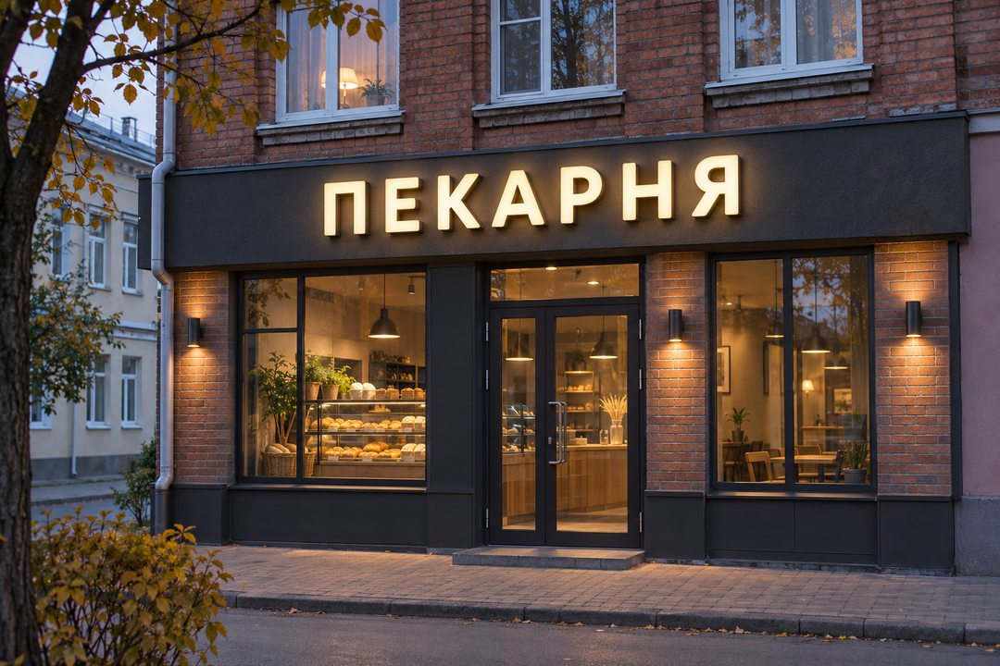
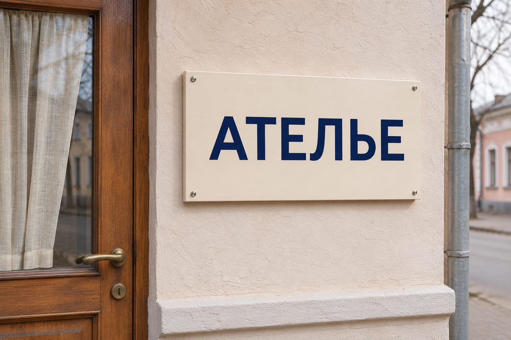
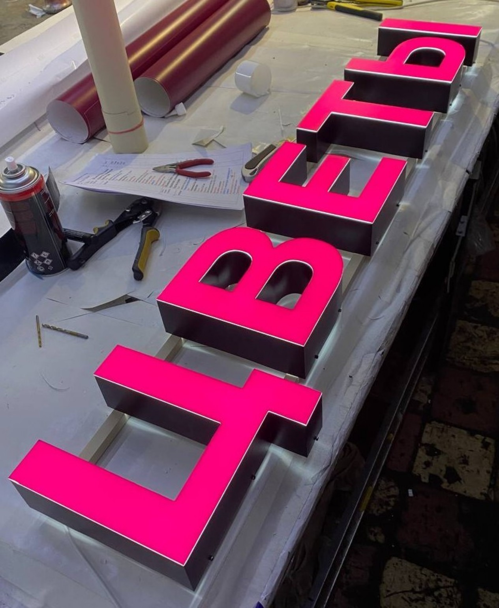
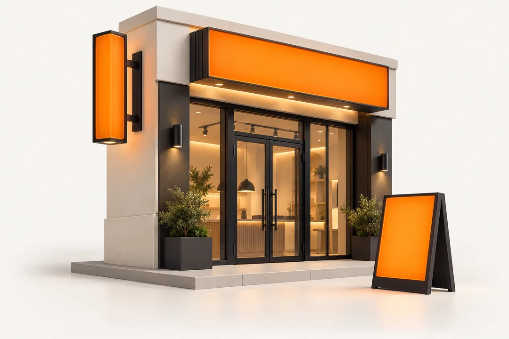

Световые объёмные буквы
Для кафе, аптек и магазинов, которые работают вечером. Лицевая подсветка освещает саму букву, контражур создаёт световой контур на стене.
- Макет букв на фасаде
- Подбор подсветки и крепления
Борисоглебск · Поворино · Грибановский
Изготовим вывеску для магазина, кафе, офиса или производства. Подберём световые буквы, короб или несветовую конструкцию, покажем макет на фасаде и рассчитаем монтаж.
Нет размеров или макета? Для начала достаточно города и короткого описания.

Выберите конструкцию по тому, с какого расстояния и в какое время люди должны замечать вход.

Для небольшого входа важны контраст и высота букв. Для длинного фасада нужно проверить, как читается название издалека. На макете по фотографии можно сравнить масштаб, положение и цвет до изготовления.
Подробнее о визуализации на объекте
Фото из мастерской
На фотографии видны форма букв, лицевая поверхность и объёмный борт. Так выглядят элементы вывески на рабочем столе перед установкой.
В заявке укажите название и примерный размер. Фото фасада можно передать при обсуждении заказа. Внешний вид, подсветку и крепление обсудим при расчёте.
Напишите город, вид бизнеса и желаемую дату. Если габариты пока неизвестны, начнём с места установки и названия.
Фото и файлы можно передать при обсуждении заказа.
Габариты, высота и количество букв, материал основы, тип подсветки, высота установки и доступ к фасаду. Для юрлица подготовим предложение с отдельными работами.
Обсудить мой вариантДля одной торговой точки подберём конструкцию по месту. Для нескольких отделений согласуем единый макет и посчитаем каждый адрес отдельно с учётом фасада, высоты и доступа.
Сообщите адрес, название на вывеске и дату открытия. Обсудим размеры, осмотр и пожелания к подсветке.
Покажем макет, укажем материалы и разделим в расчёте изготовление, демонтаж и монтаж. Порядок оплаты и комплект документов для бухгалтерии согласуем до заказа.
Уточним доступ к месту работ, возможность подключения, время монтажа и условия собственника здания. План выезда согласуем по адресу в любом из трёх населённых пунктов.
Да. Принимаем заказы на изготовление и монтаж в Борисоглебске, Поворино и Грибановском. Стоимость выезда и работы на высоте уточняем по адресу.
Оценим её состояние и размеры нового текста. Подробности — на странице ремонта вывесок.
Пришлите название, цвет и фото входа после первого обращения. Предложим формат и согласуем макет до запуска в производство.
Да. Согласуем текст, размеры и место на фотографии фасада. Если нужно сравнить световой и несветовой варианты, укажите это при расчёте.

Услуга простыми словами
Вывеска показывает, кто находится в здании и какие услуги предлагает. Начинаем с места установки: оцениваем читаемость, пропорции и подходящий вариант исполнения.
Для начала: Фото фасада, примерные размеры, название, логотип и желаемый срок.
Визуализация, крепление, подсветка и монтаж требуют отдельного согласования; конструктивные расчёты не заменяются картинкой.
Рассчитать мой вариантУкажите город и оставьте телефон. Менеджер уточнит задачу и подготовит расчёт для вашей организации. Если нужно коммерческое предложение, укажите это в заявке.